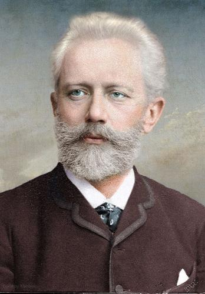

Piotr Ilitch Tchaikovski foi um compositor russo do período romântico, cujas obras
estão entre as mais populares do repertório clássico. Primeiro compositor russo a
conquistar fama internacional, sua carreira foi impulsionada por sua participação
como regente convidado em outros países da Europa e nos Estados Unidos.

Pyotr Ilyich Tchaikovsky nasceu em maio de 1840, na província de Vyatka, no
Império Russo. Seu interesse precoce pela música veio dos pais, que tiveram educação
nas artes. Aos cinco anos, o jovem iniciou seus estudos no piano.
Apesar do dom do menino, seus pais decidiram enviá-lo, em 1850, para a Escola de
Direito de São Petersburgo. Ser advogado daria uma posição social melhor para o jovem.
Tchaikovsky estudou até 1859 e conseguiu um emprego no Ministério da Justiça antes
de se formar.
Nesse período, no entanto, passou por um momento muito difícil, a morte de sua mãe, da
qual ele era muito próximo, que marcou a vida do compositor.
Em 1863, Tchaikovsky largou o emprego no Ministério da Justiça para se dedicar
inteiramente à composição. Apesar de já estar com 20 anos, um pouco tarde para estudar
música, ele se opôs às expectativas da família, matriculou-se no Conservatório de São
Petersburgo.
A partir daí começou a produzir obras mais maduras. Sua primeira sinfonia, “Sonhos de
Inverno” quase o levou à loucura devido ao estresse do trabalho. Perfeccionista, o
compositor sofria muito com o rigor que ele mesmo impunha à sua obra.
Tchaikovsky se apresentou por toda a Europa e suas sinfonias e óperas ganharam o respeito
e o reconhecimento.
Em 1876, o músico ganhou o apoio da baronesa Nadyezhda von Meck, com isso pode ter uma
vida financeira mais tranquila, mas foi um período curto, que durou somente até 1890.
Em junho de 1893 recebeu o título de Doutor Honoris Causa pela Universidade de Cambridge.
O compositor veio a morrer de cólera em novembro do mesmo ano. Como um bom artista
romântico teve a vida atormentada por frustrações amorosas e profissionais, mas viveu
e criou intensamente.
Morte
Em 1893, a Academia Musical de Paris lhe entrega o diploma de membro correspondente e a Universidade
de Cambridge, o título de doutor Honoris-causa. Nesse mesmo ano, já dava mostras de extremo cansaço, e
instalado na casa de campo em Klin, compõe sua última sinfonia, "Patética".